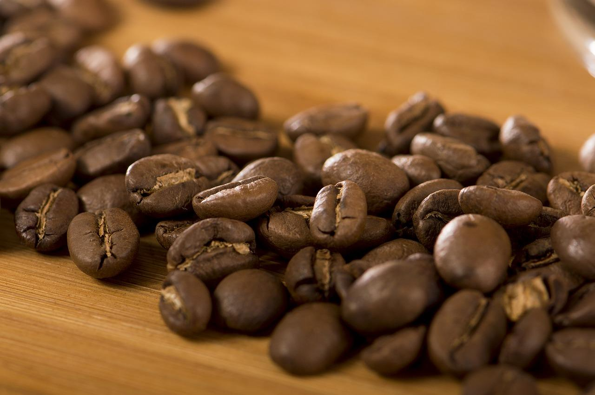
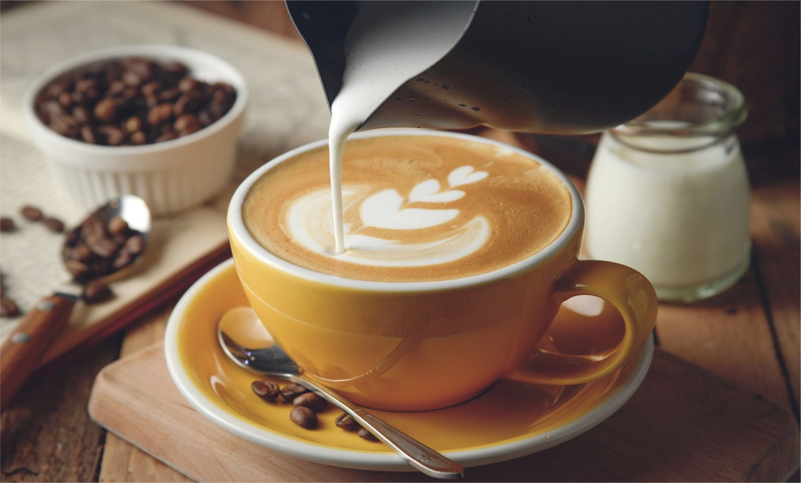
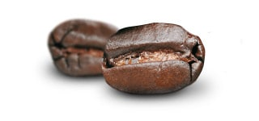
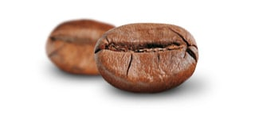
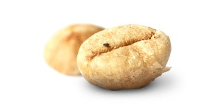

Nossos Cafés
Café Moído

Esse café é, sem sombra de dúvidas, o mais comum no dia a dia dos apreciadores de café.O café moído nada mais é do que um café torrado em grãos que passou pelo processo de moagem.
Café Especial
Cafés especiais, são aqueles da mais alta qualidade, com pouco ou nenhum defeito e com um carácter distintivo no copo.
Café Expresso
O expresso é feito com os mesmos grãos que o café tradicional. Porém, ele é feito em máquinas específicas que aumentam a pressão dessa passagem.
Tipos de Grãos
Arábica
O champanhe do café, os grãos Arabica tem uma riqueza aromática maravilhosa, produzindo um gosto suave e profundo ao mesmo tempo.
Robusta
A Rainha da cafeína do café, os grãos Robusta contêm aproximadamente o dobro do estimulante dos grãos Arabica. Isso permite que o café seja forte, com um sabor levemente amargo.
Kopi Luwak
Para uma experiência gourmet incomum, experimente os grãos altamente apreciados extraídos do esterco dos gatos selvagens indonésios.O processo digestivo pelo qual as cerejas concede aos grãos um sabor distinto.
A História do Café

A origem do café no Brasil encontra-se no século XVIII. As primeiras mudas de café foram plantadas ainda pelos idos de 1720, na província do Pará. A pessoa que teria trazido as primeiras sementes do café para o Brasil foi Francisco de Melo Palheta, após viagem à Guiana Francesa.